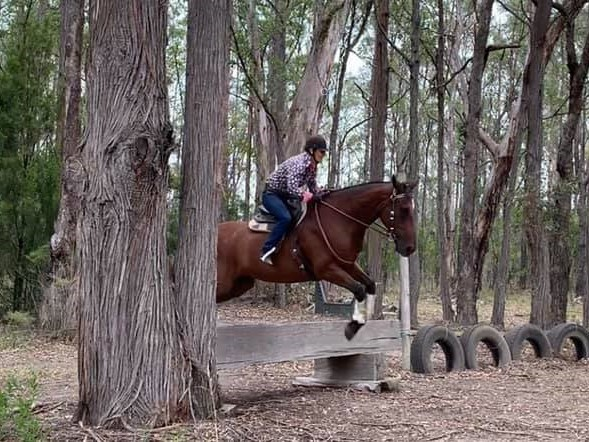
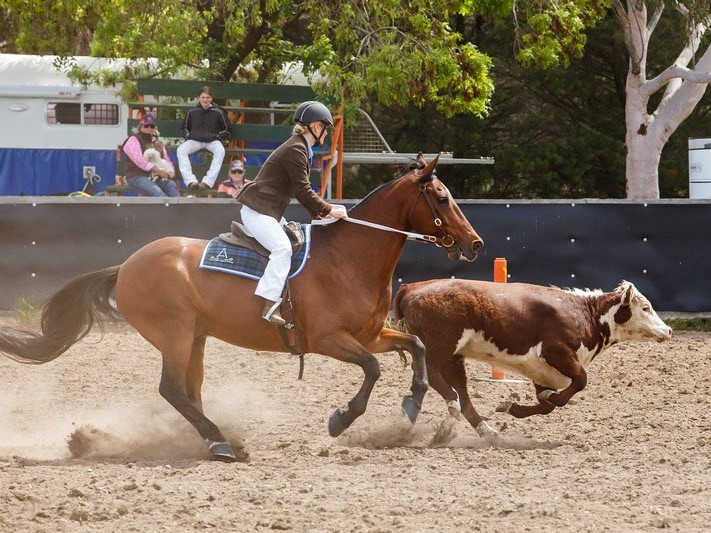
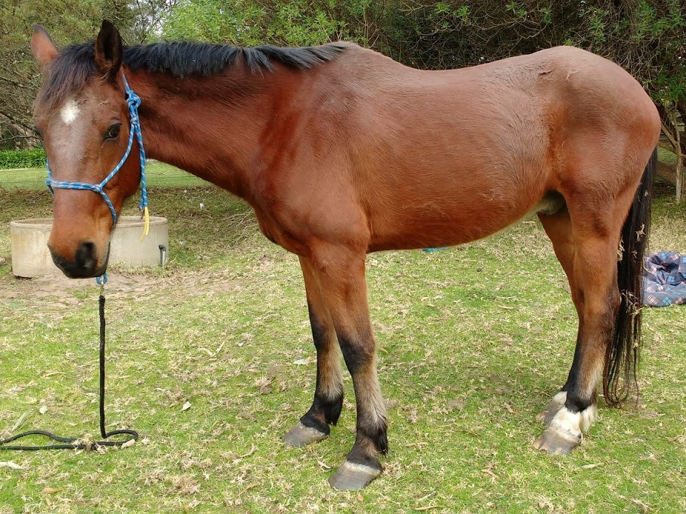
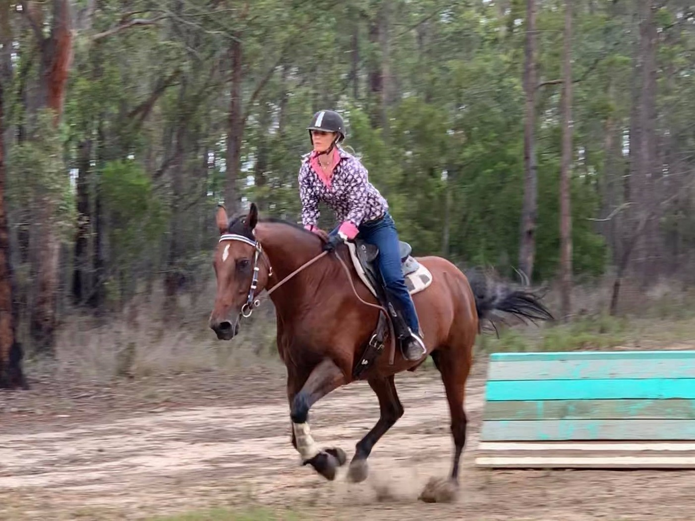
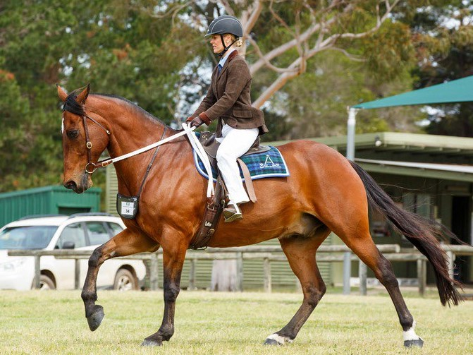

Equusential Blog Blog Posts
Posted on 17 July 2021
Duke's journey from despair to domination..
Duke is a long-term client of Equusential Therapies. He is owned by our former sponsored rider Krystel! Duke was an original Equine Myofunctional Therapy (EMT) training case-study for Yvette back in 2016. Duke had suffered a serious floating accident some months earlier and also had suspected stringhalt. He was a mess!
It has been a long journey of dedication, care and commitment to get him to blue-ribbon working condition. To learn more about Duke's despair to domination journey please see read on.
"... she was thinking “good luck with that, he will never be sound again!” "
Duke is a Quarter Horse x Australian Stock Horse x Clydesdale which affectionately means he looks like an ‘overgrown Shetland!’ He is big in the body and short in the legs! Despite his 'look' he is a sharp, multi-talented and athletic horse, exceptionally talented working cattle (mustering and camp drafting). He has also become an accomplished adult rider’s mount in dressage, show jumping and cross country. He is a handy trail-riding mount, albeit occasionally spooky!

Duke Cross Country Training 2020
Duke was purchased for stock work and trail riding by Krystel and her partner Jason. He had done feedlot work in the past. After a few years he was loaned to family to try for camp drafting. He was used for a season getting consistent 22+ camp scores!

Duke Camp Drafting, 2019
He was no longer needed as the family got a new horse and was picked up in Feb 2016. He appeared to have slight stringhalt symptoms as he struggled to load on to the float. Unfortunately, on the journey home (a couple of hours) he fell in the float a few times. When they arrived home, Duke was down in the float. Because the chest bars could not be removed, he couldn’t get up and had to be dragged out of the float. In the days, weeks and months following it became apparent he had done some serious damage from his floating accident.

Duke 2016: EMT Case study
Duke went from looking a ‘million bucks’ in fit, fat and shiny camp-drafting condition to appearing like a 'coat-hanger' with a terrible coat, severe muscle wastage and crippled.
Duke was seen by a veterinarian/chiropractor for his condition as it was not improving with paddock rest. Krystel tried all the herbs and remedies recommended but nothing seemed to work. He remained unsound and miserable.
I (Yvette) was aware of Duke’s condition and when I had the opportunity to do case studies for my EMT course I asked for Duke to be a participant. Krystel accepted, although on the inside she was thinking “good luck with that, he will never be sound again!”
Duke, Case study photos 2016
Using Duke as a case study we began to see promising changes in his shape. I distinctly remember my first massage with Duke that I felt I had to be so gentle, his muscle and coat condition was so terribly poor, he responded very sensitively as if in so much pain. His eye was so dull and his spirit so miserable. I massaged his muscles carefully and just hoped and imagined that the depleted muscle could regain shape. Even on parts that were so sunken you could not feel any muscle I just massaged the outline of where a muscle would be.

Duke Case Study 2016, .. seeing improvement from massage..
When Duke walked he had to take regular pauses, it was like was randomly ‘frozen.’ He was also extremely spooky as if he was having nerve pain.. He couldn't balance enough to do stretches or have his feet done, he was incredibly weak
Duke completed his three case study treatments and with each session he appeared better in his body, coat, movement and brighter in his demeanour much to our collective delight. I remember it being a celebration when he was seen to go faster than a walk in his paddock!
Duke went on to receive routine (every few months) massages and it was clearly seen that his shape began to change. Duke’s muscle condition regrew and improved, coat condition improved, and he eventually became sound!
Duke Ribbon Haul, about six months worth 2019-2020 Spring/Summer competition season
Over the past few years Duke was brought back into work and showed no sign of his past pain. He competed actively and successfully for a couple of seasons at adult riding club, pony club, gymkhana and stock horse challenge events. In a short amount of time Duke and Krystel collected ribbons (mostly blue) at virtually every event they competed in!

Duke 2020, Orbost Cross Country Training
Seeing him in peak performance condition and strength it is so hard to explain just how cripple he was only a few years ago. It is remarkable and shows the multi-faceted benefit that EMT can have in rehabilitation. Duke blossomed and seemed grateful and motivated to be out and about competing and learning.

Duke 2019, East Gippsland Stock Horse Show (Open)
Duke is now semi-retired and serving a life of leisure, babysitting a herd of youngsters and taking care of broodmares!
Good boy Duke, I am so glad your mum allowed you to be my case study! Yvette x